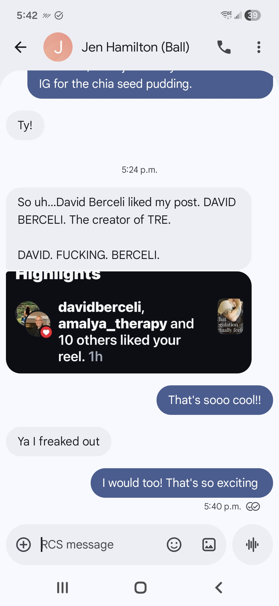
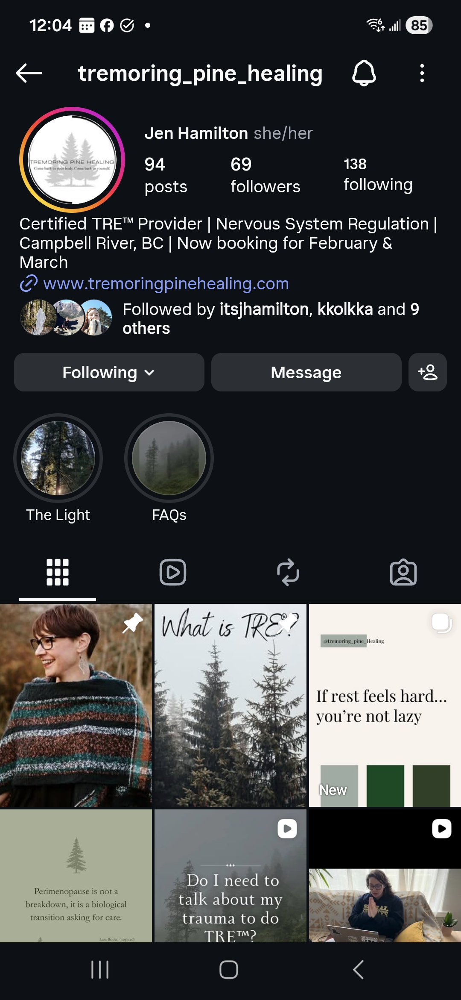
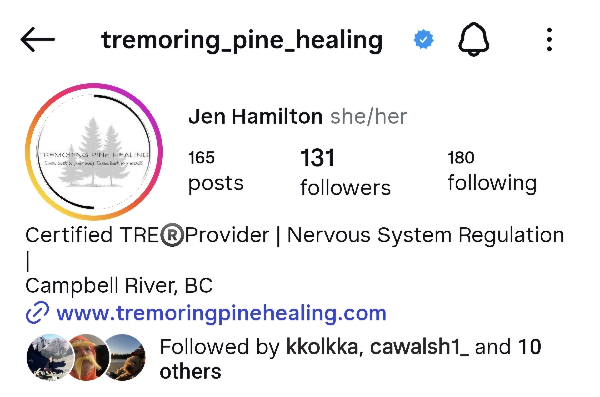
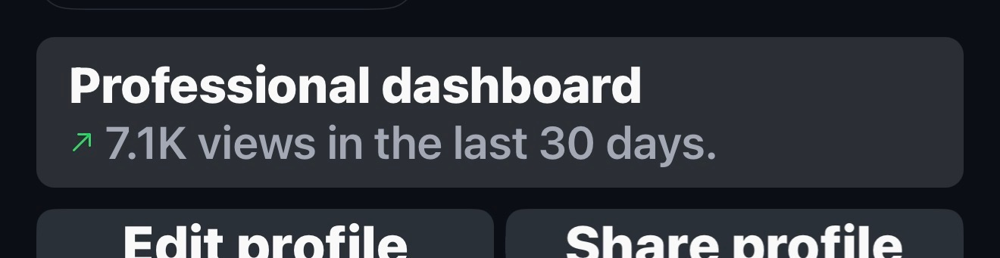
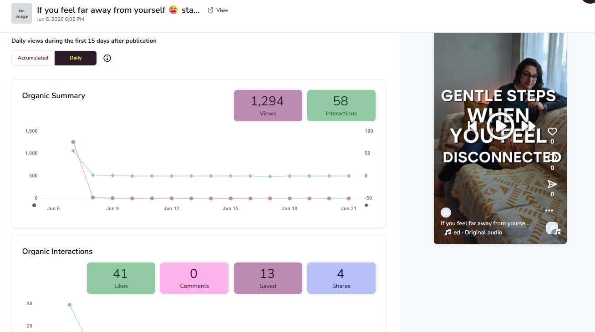
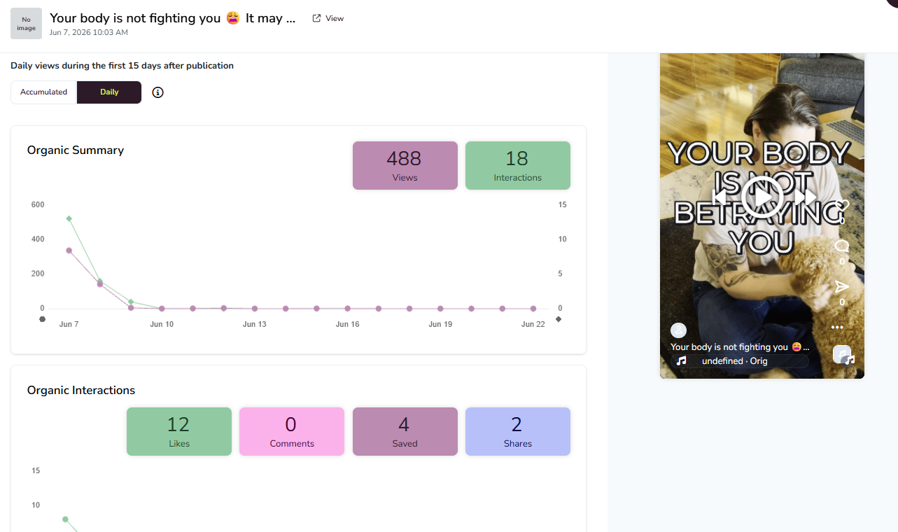
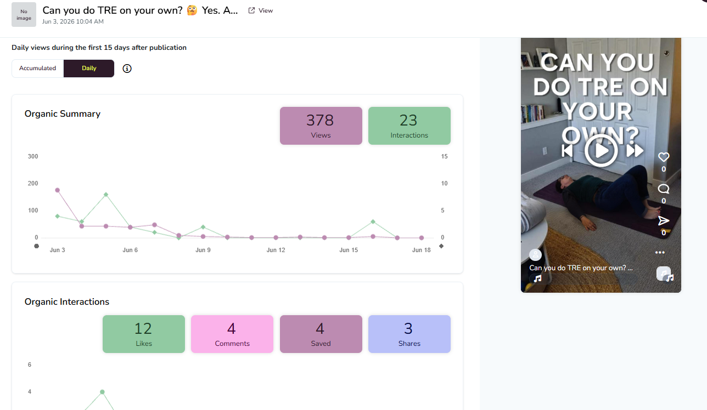
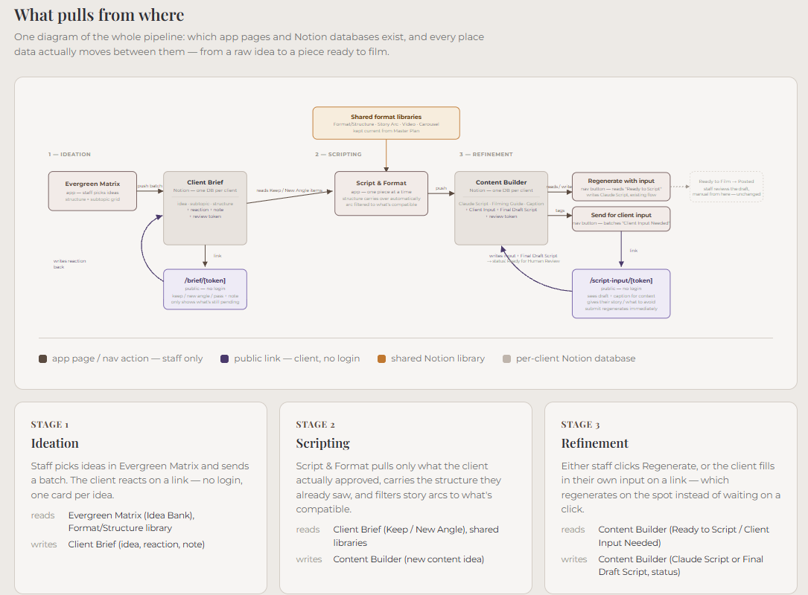

After eight years in social services, I brought the same dedication, problem-solving, structure, and real human connection to content strategy. I build content with a self-built AI-assisted content operating system, backed by a Notion library of story arcs and templates, that turns research into scripts while keeping every piece anchored in the client's real voice, values, and stories.
Posting doesn't guarantee results. When the views are there but the follows and leads aren't, that's not a content problem. It's a systems problem.
A self-built content operating system, backed by a Notion library of story arcs and formats, that turns research into scripts without losing your real voice. You get content that sounds like you, at a pace no one person could sustain by hand.
Research, program data, and performance metrics become actual content angles, not just captions under a chart. Every piece has a reason it should work, not a guess.
A two-round check-in, at the idea stage and again at the script, keeps everything anchored in real thoughts, beliefs, and stories. What ships still sounds like a person, not a template.
Strategy, paid media, scripting, and reporting run by one person, end to end, then repurposed across platforms without losing the point. No hand-offs, nothing lost in translation.
This is the actual decision framework I use for every piece of content I make, for clients and for my own work. Not a vibe. A process.
Skipping a step is how content ends up generic. Following all seven, in order, is how it ends up sounding like an actual person said it.
I use AI to research, draft, and automate. AI isn't a replacement, it enhances what I already do.
Every idea goes back to the client first. I want their real thoughts, values, and opinions, and real examples from their own life, before a single line gets written.
The script goes back again. This second round is where it gets refined with their actual voice, their beliefs, their stories, not a generic version of them.
The result isn't AI slop or a generic voice. It's still your story, just faster to get there.
Real client results, not hypotheticals.

On Day 5, the global founder of TRE liked one of the reels — organic validation the content was landing in exactly the right community.



"Sonya helped to launch my social media prior to starting my business. She listened to my vision and was able to implement strategies that aligned with my needs. She is wonderful to work with and I would highly recommend her to anyone who needs direction in their marketing."
— Jen H., Business Owner

"If you feel far away from yourself…"
1,294 views · 14 saves

"Your body is not fighting you…"
488 views · 4 saves

"Can you do TRE on your own?"
378 views · 4 saves

The infrastructure behind every client engagement — not a template, a working system.
I own a channel end-to-end, strategy, creative, paid media, and reporting, without waiting on a team to execute. AI is part of my daily workflow, not a shortcut I reach for occasionally.
Let's talkI build content systems for founder-led brands that keep your real voice, beliefs, and stories in the work, using AI to move fast without losing what makes it yours.
Let's talk